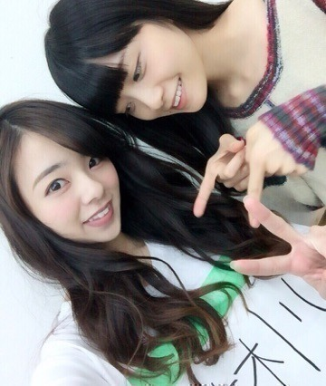
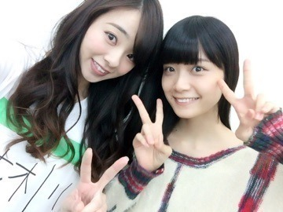
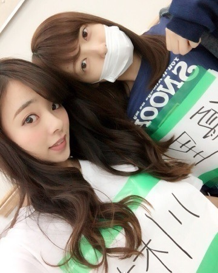
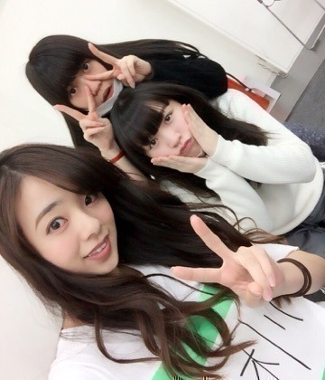
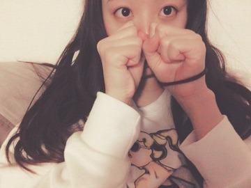

こんにちわぁ.＊
川村まひろです(#^.^#)ノ
まいまいと．

まいまいのフロント，，，
本当に嬉しいです.＊
...ってことを本人に伝えたら喜んでくれました(^_-)ノ ずっと言いたくてやっと言えたから良かった...♡
「川村」って服にはってるけど気にしないでください♡笑

最近，嬉しかったこと...
メンバーがモバメで私のことを書いてくれること．(T . T)ノ
この前日芽香が，「まひろは本当は優しい子」みたいな事を送ってくれてたみたいで...（ ; ; ）ノ
それを知った時とてもとても嬉しかったよ。。ノ ファンの方のコメントで見て知りました♡
「ひめかありがとぉぉー！ だいすき。。。
またご飯やカラオケ行こうね.＊？」
ゆうり！！
またスパルタダンスレッスンしましょう♡♡♡ぇへへ ゆうりもあいかわらず好きやで？

そしてそして！！！
明日はなんと「武道館」♡！！！
はやいっ！！
ドキドキ。わくわく。ソワソワ。。。
「アンダーライブでいつか武道館に立とう！」と言う夢がついに明日叶うんだ...と思うと何だか不思議。。
メンバーで支え合いながら乗り越えて来た沢山の壁...ちょっと今夜は色々思い出し，改めて武道館に立つ事の意味を考え，いい夢を見て♡，明日を迎えたいと思います( ^ω^ )！
私のサイリウムカラーは『赤×白』です♡！
嫉妬の権利が赤なので，赤のサイリウムをお持ちの方はわりといらっしゃるのかな？？？
よろしくお願いしますね♡ぇへ
可愛い妹たちぃ♡
蘭世もみり愛も好きやでぇノ

ぁ！...
周りの人々に，「まひろ髪くらい。もっと明るい方が似合う。」と言われたので，今美容院に行ってきました！！！
髪色もよくなって，今すっっごく最高な気分です♡(^_-)ノ
これで武道館4日間は、最高なモチベーションで挑めますねぇ～ん♡ぇへへ
ベッドで撮りました♡

スッピンで前髪もとめて
本当にオフモードだったので
顔隠しました♡ぇへへ
じゃあね。
1234goろってぃー。ノ